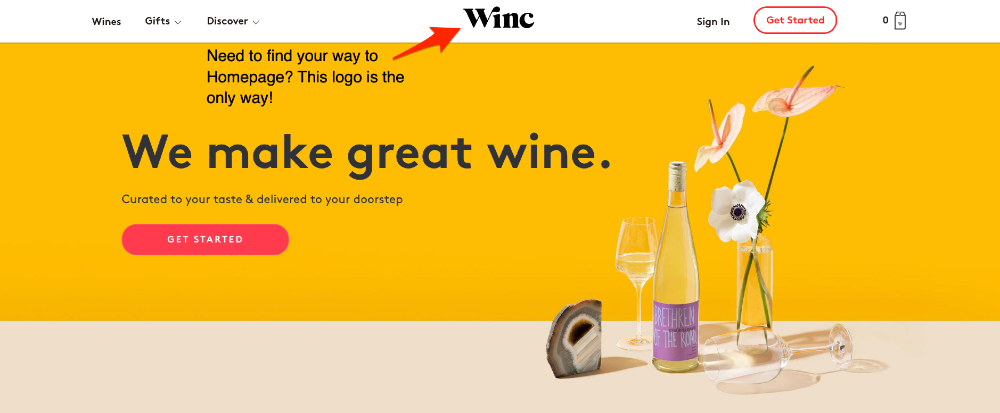

Usable Design Analysis
What is the purpose of the site?
The website up for analysis this week is for all those wine lovers! Winc is a wine subscription website with a wide selection of quality wine that is delivered to your front door. They do a great job providing detailed information ranging from the wine’s origin, notes, best served, alcohol percentage and what it’s best pared with.
For this site, I will explain my thoughts using the Usability Guidelines that outlines the User interface Design found at, Usability.gov. I will answer my set of criteria principles that I find important for user accessibility. They are as follows:
- Are the navigation elements clear and consistent?
- Is the Homepage clear? Can you find what you're looking for?
- Links
- Understand and Meet User's Expectations
Navigation
Winc offers 2 navigation sections listed at the top of the page, each utilizing a dropdown menu giving
subsections to more options to explore the site. Having a dropdown menu is a smart feature to use when
dealing
with multiple pages. However, the navigation is not clear when they combine 10 section elements in the 2
dropdown
sections they offer. Most of these pages can be made useful in separate sections such as About and Blog.
Take a look at the navigation figures below
They should have consoildated the About, Winemaking and How it works subsection, into 1 About Us section.
Homepage
The homepage has an eye-catching design that is not too outrageous to the human eye, but does capture my interest in wanting to continue browsing the site. I do see headings with short descriptive content telling me bits of pieces of what Winc is. So right away, I know I can pick from a selection of wine and have it delivered.
I am confused about the advertisements they have displayed on the homepage. At first glance, I’m
impressed with the popular brands they have shown,
like Vouge and Whole Foods. But where is the proof?? This is not good content to have on a homepage when it
cannot be backed up with
facts, such as the year or a picture of Winc being advertised. Not good credibility!
Take a look
below!
Links
The picture below is found in the About subsection. This shows images that are clickable with no text. This is confusing to users.
In this section I want to discuss this website's links. Starting at the homepage. They have buttons with
info giving us assumptions to it's destination,
regarding wine delivery, selection of wines and a way to discover my unique palate to wines.
But in this case, do not let the design fool you, the links do not take me to the selection of wines or how
the delivery process works.
Take a look
below!
The information provided with the links are inaccurate and misleading too users. The links do not direct us to the destination we imagined, but to another source of content. It directs us to a set of questions, one asking “How we like our coffee”? The content should be clearly conveyed with the links to help the user find what they are looking for.
Understand and Meet User's Expectations
This section is about my interpretation and if it meets the format of user expectations. This relating to navigation, content, organization and if the site was complicated to use. I do understand the purpose of the site and it had good visual design. However, it did lack in areas including the misuse of navigation sections, misleading content that involves user confusion with links and images.
The site does provide a tasty selection of wine, I would know because I have been a member for several months! Cheers!